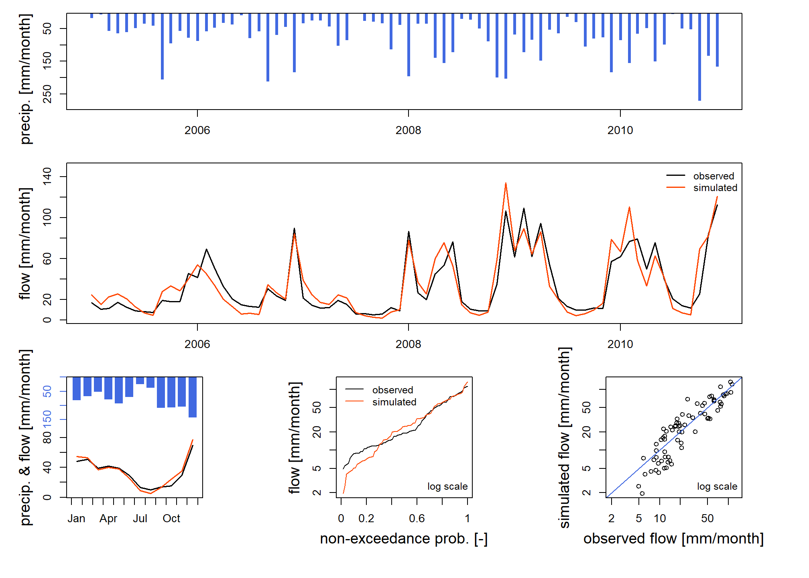
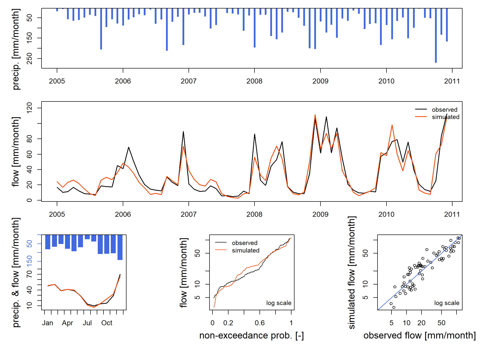
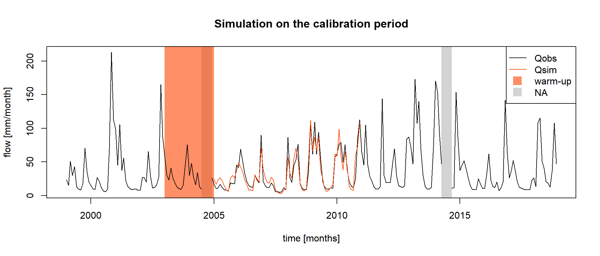
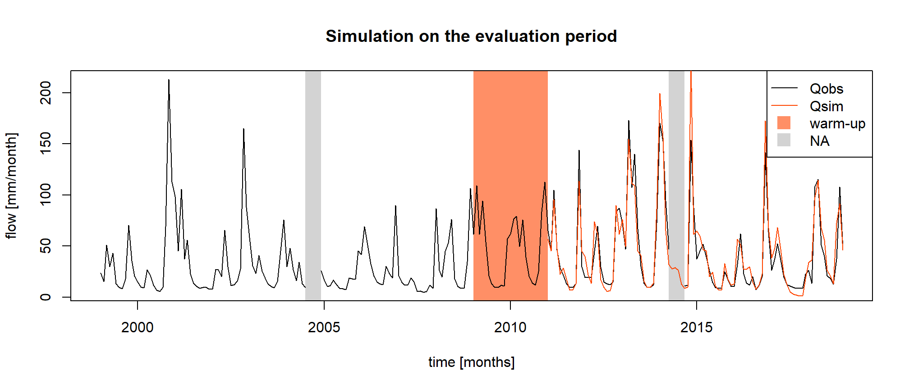
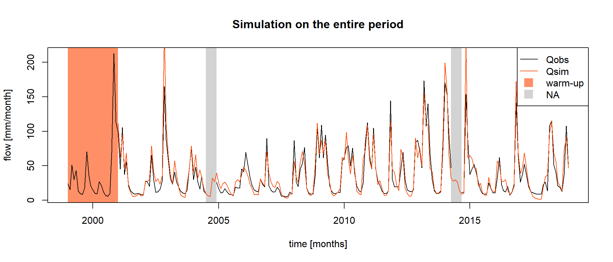

Reconstitution de débits
Pierre Brigode & Olivier Delaigue
1 Énoncé
1.1 Contexte
Le bassin versant L’Esteron au Broc [La Clave] est un bassin de 442 km² pour lequel les débits mesurés sont disponibles de 1999 à 2018, mais avec quelques lacunes (notamment durant l’année 2014).
L’exercice consiste à utiliser les données hydro-climatiques disponibles sur le bassin versant de et un modèle pluie-débit pour reconstituer les données manquantes par simulation hydrologique (cf. figure suivante). On doit pour cela s’assurer au préalable, par une procédure de calage-évaluation, que le modèle est d’un niveau de performance suffisant pour réaliser cet exercice de reconstitution.
Ce travail sera réalisé en quatre étapes :
- Calage manuel du modèle pluie-débit (sur la période dite de “calage”)
- Calage automatique du modèle pluie-débit (sur la période dite de “calage”).
- Evaluation des jeux de paramètres obtenus (sur la période dite d’ “évaluation”).
- Reconstitution hydrologique par modélisation pluie-débit (sur la période dite de “simulation”).

1.2 Consignes
Cette section vise à définir les conditions de calage et de simulation du modèle hydrologique (période de calage des paramètres, périodes d’initialisation du modèle, critère de calage, etc.).
1.2.1 Modèle pluie-débit
Vous utiliserez le modèle GR2M (Mouelhi et al. 2006). Il s’agit d’un modèle pluie-débit conceptuel et global, fonctionnant au pas de temps mensuel et possédant deux paramètres. Il nécessite en entrée des séries temporelles continues de précipitations et d’évapotranspirations potentielles (ETP) mensuelles.
Ce modèle est utilisable facilement grâce au package airGRteaching (Delaigue et al. 2024, 2023), développé pour le logiciel R par l’équipe Hydrologie des bassins versants de l’unité de recherche HYCAR (INRAE, France).
Les séries temporelles de précipitations, d’ETP et de débits peuvent
être facilement mises en forme grâce à la fonction
PrepGR(). On peut réaliser une simulation pluie-débit grâce
à la fonction SimGR() et un calage des paramètres grâce à
la fonction CalGR().
1.2.2 Période de calage (et d’initialisation)
GR2M, comme de nombreux modèles pluie-débit conceptuels, est constitué de réservoirs, dont les niveaux initiaux en début de simulation sont inconnus et ne peuvent pas être estimés par mesure. On doit donc choisir ces niveaux initiaux de manière arbitraire (ou en se basant sur un a priori). Cela peut induire des erreurs fortes du modèle, dans le cas où les conditions initiales estimées s’écartent de ce qu’elles devraient être en fonction des conditions climatiques antérieures. Pour limiter ces erreurs, une période d’initialisation (également appelée période de mise en route, ou de en anglais) est généralement considérée. Cette période, précédant la période de simulation, est utilisée pour permettre d’avoir des niveaux dans les réservoirs idnépendant de ces conditions initiales. Elle doit donc être plus longue que la mémoire du bassin aux conditions climatiques antérieures. Sur beaucoup de bassins versants, cette mémoire des conditions antérieures n’excède pas une année, mais sur d’autres présentant un comportement pluri-annuel, par exemple du fait de nappes, il peut être nécessaire de considérer plusieurs années pour l’initialisation du modèle. Durant cette période d’initialisation, les erreurs du modèle ne sont pas utilisées dans le calcul des critères de performance. Cela signifie qu’il n’est pas nécessaire de disposer de données de débit observé sur la période d’initialisation, mais seulement de données climatiques.
Dans cet exercice, une période de 24 mois sera considérée, et débutera en janvier 2003 et s’achèvera en décembre 2004. Le pas de temps suivant (janvier 2005) constituera le premier pas de temps du calage du modèle.
La période à considérer pour caler les paramètres de GR2M sur le bassin versant débute de ce fait en janvier 2005 et s’achèvera en décembre 2010.
1.2.3 Critère de calage
Le critère de calage considéré dans cet exercice est le critère de Nash et Sutcliffe (Nash and Sutcliffe 1970), noté \(NSE\) par la suite (cf. équation suivante). Ce critère est largement utilisé en modélisation hydrologique.
Le critère NSE, borné entre \(-\infty\) et \(1\), permet de quantifier la performance d’un modèle de manière relative, en comparant une série de débits simulés avec un modèle dit “naïf”, ici la moyenne des débits observés (i.e. une série de débits constituée en chaque pas de temps par la moyenne des débits observés). Ainsi, une valeur de NSE égale à 1 signifie une concordance parfaite entre les séries de débits observés et simulés (ce qui n’est jamais le cas), alors qu’une valeur de NSE inférieure à 0 signifie que la simulation considérée est moins performante que la simulation du modèle “naïf”. Le calcul de \(NSE\) est détaillé dans l’équation suivante, dans laquelle \(Q_{obs,t}\) est le débit observé au pas de temps \(t\), \(Q_{sim,t}\) est le débit simulé au pas de temps \(t\), \(\overline{Q_{obs}}\) est la moyenne des débits observés, et \(n\) est le nombre d’observations :
\[\begin{equation} NSE = 1-\frac{\sum_{t=1}^{n}(Q_{obs,t}-Q_{sim,t})^{2}}{\sum_{t=1}^{n}(Q_{obs,t}-\overline{Q_{obs}})^{2}} \end{equation}\]
Les différents éléments nécessaires pour le calcul du critère de
calage doivent être renseignés en argument de la fonction
CalGR().
1.2.4 Estimation manuelle des paramètres de GR2M
Cette tâche, pouvant être fastidieuse (mais très formatrice) et nécessitant une expertise certaine, est à réaliser en testant plusieurs jeux de paramètres de GR2M et en analysant la qualité des simulations produites sur la période de calage. Dans cet exercice, un maximum de 10 jeux de paramètres du modèle seront à tester. Le premier jeu de paramètres à tester est constitué des valeurs médianes des paramètres de GR2M, définies par Mouelhi et al. (2006) après de nombreux calages du modèle sur différents bassins versants. Ces valeurs ainsi que les bornes de variations associées sont égales à :
- X1 : 380 [mm] (140 [mm] \(\leq\) X1 \(\leq\) 2640 [mm]) ;
- X2 : 0.92 [-] (0.21 [-] \(\leq\) X2 \(\leq\) 1.31 [-]).
1.2.5 Calage automatique des paramètres de GR2M
L’estimation automatique de paramètres vise à utiliser un algorithme de recherche dans l’espace des paramètres. Cet algorithme va générer automatiquement des jeux de paramètres, les tester, et en générer d’autres en fonction des performances de ceux d’ores et déjà testés, jusqu’à converger vers un optimum. L’algorithme développé par Michel (1991) sera utilisé dans cet exercice.
1.2.6 Période d’évaluation
La période d’évaluation (ou de contrôle) est une période sur laquelle on applique un modèle préalablement calé sur une autre période. Il s’agit d’un mode d’utilisation classique d’un modèle, que l’on confronte à des situations inconnues. L’indépendance de la période d’évaluation par rapport à celle de calage permet de garantir que le modèle ne bénéficie pas d’information déjà connue. L’objectif de ce test est d’évaluer si le modèle est capable dans de nouvelles conditions climatiques, de maintenir le même niveau de performance (donc d’erreur) que celui rencontré en calage. Si oui, on peut estimer que les paramètres du modèle dépendent peu des conditions de la période de calage et donc que le modèle est transposable à des conditions différentes (on dit qu’il est robuste). Si non, il faut rechercher les causes de cette baisse de performance.
Sur cette période d’évaluation, on peut évaluer les performances du modèle avec le même critère que celui utilisé pour le calage, mais on peut aussi compléter l’analyse avec d’autres critères.
Dans cet exercice, la période d’évaluation débutera en janvier 2011, s’achèvera en décembre 2018, et sera précédée par une période d’initilisation débutant en janvier 2009 et s’achevant en décembre 2010.
1.2.7 Période de simulation
La simulation finale vise, pour cet exercice, à reconstituer les débits du bassin versant L’Esteron au Broc [La Clave] pour les mois sans mesures. Afin d’avoir une seule simulation couvrant l’ensemble de la période étudiée, cette simulation débutera en janvier 2001 et s’achèvera en décembre 2018, avec une période d’initialisation de 24 mois débutant en janvier 1999 et s’achevant en décembre 2000.
1.3 Données disponibles
Les données disponibles pour la modélisation pluie-débit sont les suivantes :
- une chronique journalière de précipitations totales (liquides +
solides) [mm/jour] (
Ptot); - une chronique journalière d’ETP calculée grâce à la formule d’Oudin et al. (2005, mm/jour)
(
Evap); - une chronique journalière de débits exprimés en lame d’eau [mm/jour]
(
Qmmd).
Les séries temporelles journalières peuvent être agrégées au pas de
temps mensuel grâce à la fonction SeriesAggreg().
2 Éléments de correction
2.1 Chargement et mise en forme des données
Les lignes de codes présentées ci-après permettent de lire les données nécessaires au calage du modèle pluie-débit GR2M et de définir les périodes temporelles de travail (période d’initialisation, période de calage et période d’évaluation) :
# Catchment data loading
library(airGRdatasets)
data("Y643401001", package = "airGRdatasets")
# Catchment metadata
str(Y643401001$Meta)## List of 4
## $ Code:List of 2
## ..$ H3: chr "Y643401001"
## ..$ H2: chr "Y6434010"
## $ Name: chr "L'Esteron au Broc [La Clave]"
## $ Coor:List of 2
## ..$ X: num 7.16
## ..$ Y: num 43.8
## $ Area: num 442# Observed daily time series
ts_obs_d <- Y643401001$TS
# Summary of the time series
summary(ts_obs_d)## Date Ptot Temp Evap Qls Qmmd
## Min. :1999-01-01 Min. : 0.000 Min. :-7.20 Min. :0.000 Min. : 790 Min. : 0.154
## 1st Qu.:2004-01-01 1st Qu.: 0.000 1st Qu.: 5.20 1st Qu.:0.600 1st Qu.: 1830 1st Qu.: 0.357
## Median :2008-12-31 Median : 0.000 Median :10.40 Median :1.700 Median : 3100 Median : 0.605
## Mean :2008-12-31 Mean : 2.934 Mean :10.69 Mean :1.989 Mean : 6303 Mean : 1.231
## 3rd Qu.:2013-12-31 3rd Qu.: 1.200 3rd Qu.:16.30 3rd Qu.:3.300 3rd Qu.: 6990 3rd Qu.: 1.365
## Max. :2018-12-31 Max. :146.300 Max. :27.20 Max. :5.300 Max. :167000 Max. :32.611
## NA's :136 NA's :136# Calibration period
per_cal_wup <- c("2003-01-01", "2004-12-01")
per_cal_run <- c("2005-01-01", "2010-12-01")
# Evaluation period
per_eva_wup <- c("2009-01-01", "2010-12-01")
per_eva_run <- c("2011-01-01", "2018-12-01")
# Simulation period
per_sim_wup <- c("1999-01-01", "2000-12-01")
per_sim_run <- c("2001-01-01", "2018-12-01")2.2 Préparation des données pour GR2M
Les lignes de codes présentées ci-après visent à préparer les données
disponibles pour leur utilisation par GR2M, grâce à aux fonctions
SeriesAggreg() et PrepGR().
2.3 Calage manuel
Les lignes de code présentées ci-après illustrent les étapes nécessaires pour réaliser une simulation pluie-débit à partir d’un jeu de paramètres donné (ici le jeu constitué des valeurs par défault de GR2M) et pour calculer le critère NSE associé à cette simulation.
# Parameter set to test
i_param_gr2m <- c(X1 = 380, X2 = 0.92)
# Simulation over the calibration period
i_sim_manu <- SimGR(PrepGR = prep,
Param = i_param_gr2m,
EffCrit = "NSE",
WupPer = per_cal_wup,
SimPer = per_cal_run,
verbose = TRUE)## Crit. NSE[Q] = 0.8133## NSE[Q]
## 0.8132615
Le premier jeu de paramères testé (valeurs de GR2M par défaut) permet d’obtenir un critère NSE de 0.813, ce qui est une bonne performance générale. La figure précédente permet, quant à elle, de comparer la simulation obtenue avec les débits observés.
À vous de jouer désormais ! Le jeu consiste à tester différentes valeurs des paramètres de GR2M, de réaliser une simulation et de calculer le critère NSE pour chaque jeu testé afin d’identifier le jeu semblant être optimal. L’analyse des hydrogrammes simulés, couplée à la comparaison de valeurs de NSE, permettra de “guider” la modification des valeurs des paramètres. Pour ce faire, vous pouvez intégrer le code précédent dans une boucle. À chaque itération, vous testez un nouveau jeu de paramètres et calculez le critère correspondant. Vous pouvez ainsi trouver le “meilleur” jeu de paramètres.
2.4 Calage automatique
Les lignes de codes présentées ci-après permettent de caler le modèle GR2M sur la période dite de “calage”.
# Calibration
cal_auto <- CalGR(PrepGR = prep,
CalCrit = "NSE",
WupPer = per_cal_wup,
CalPer = per_cal_run,
verbose = TRUE)## Grid-Screening in progress (0% 20% 40% 60% 80% 100%)
## Screening completed (9 runs)
## Param = 347.234, 0.907
## Crit. NSE[Q] = 0.8022
## Steepest-descent local search in progress
## Calibration completed (17 iterations, 72 runs)
## Param = 639.061, 0.930
## Crit. NSE[Q] = 0.8558
## [1] 639.0611 0.9300## NSE[Q]
## 0.8558419Les deux paramètres et la valeur du critère de calage (\(NSE\)) obtenus après la procédure de calage automatique sont :
- X1 = 639 [mm]
- X2 = 0.93 [-]
- \(NSE\) = 0.856 [-]
Les performances obtenues en calage sont jugées bonnes, avec un critère \(NSE\) égal à 0.856.
Les lignes de codes présentées ci-après permettent de stocker dans un même tableau les débits observés et les débits simulés avec le jeu de paramètres obtenu par calage automatique, afin de les comparer.
# Combination of observed and simulated streamflow time series on the calibration period
ts_cal <- as.data.frame(cal_auto)
# Combination of observed and simulated streamflow time series on the entire period
ts_cal_all <- merge(x = ts_obs_m[, "Date", drop = FALSE], y = ts_cal,
by.x = "Date", by.y = "Dates",
all.x = TRUE)La figure suivante représente les séries de débits observés et simulés sur la période de calage.

2.5 Evaluation
Les lignes de codes présentées ci-après permettent d’utiliser le jeu de paramètres obtenus par calage automatique pour réaliser une simulation sur la période d’évaluation (2011-2018) et de calculer le score \(NSE\) associé à cette simulation. Ce score constitue la performance en “contrôle” du modèle.
# Simulation over the evaluation period
eva <- SimGR(PrepGR = prep,
Param = param_cal,
WupPer = per_eva_wup,
SimPer = per_eva_run,
EffCrit = "NSE",
verbose = FALSE)
# Get the criterion value
GetCrit(eva)## NSE[Q]
## 0.8642077La performance obtenue par le modèle en évaluation est de 0.864.
La figure suivante représente les séries de débits observés et simulés sur la période d’évaluation.

2.6 Reconstitution
Les lignes de codes présentées ci-après permettent d’utiliser les paramètres obtenus par calage automatique pour simuler le débit sur l’ensemble de la période étudiée.
# Simulation over the entire period
sim <- SimGR(PrepGR = prep,
Param = param_cal,
WupPer = per_sim_wup,
SimPer = per_sim_run,
EffCrit = "NSE",
verbose = FALSE)## NSE[Q]
## 0.84484Les résultats de la simulation finale sont illustrés sur la figure suivante.
